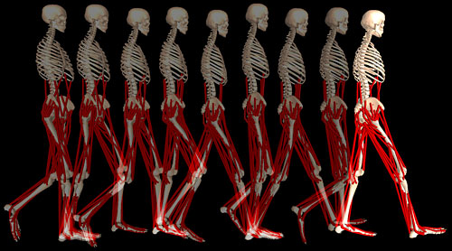
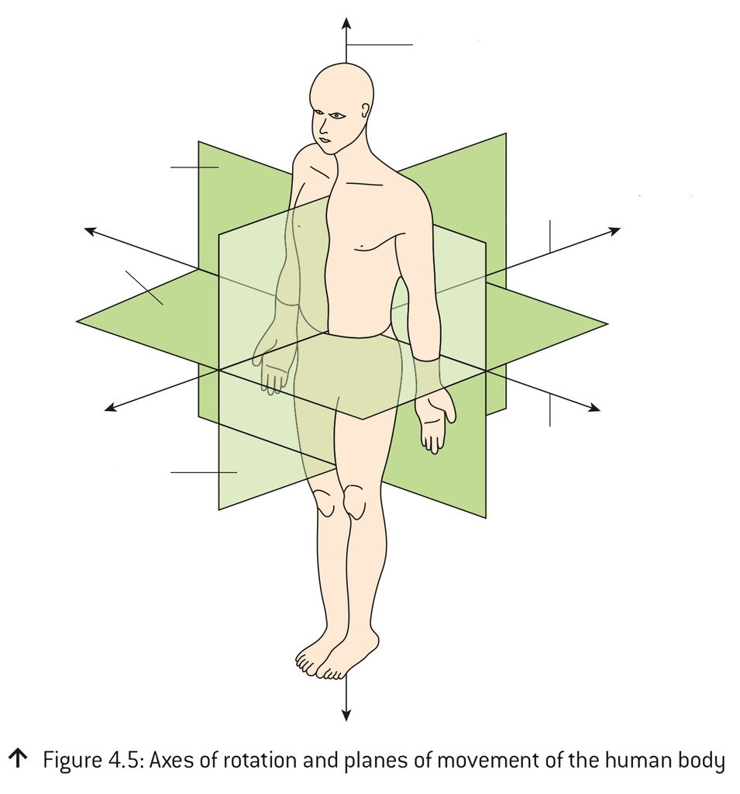
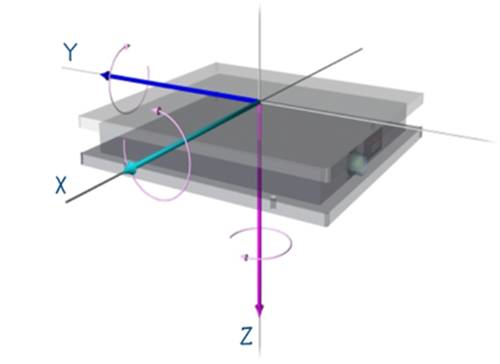
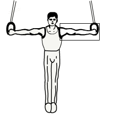
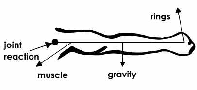
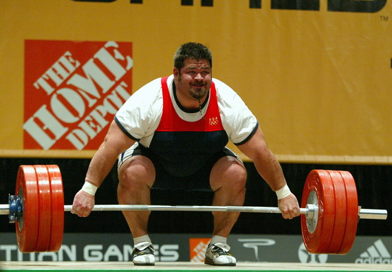
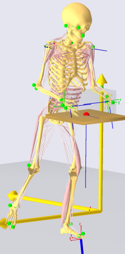

Two conditions, three equations, and the forces inside a
body that nobody can measure.
Static Analysis
Where this fits
Through kinematics and kinetics we have been working toward being able
to quantify human activity, both in motion and at
rest.
With those concepts and the relationships Newton’s laws give us,
we can solve for unknown variables — which is the whole point,
because the variables we most want are the ones we cannot measure.
You cannot put a load cell on a tendon in a living person.
You can put a force plate under their foot and a camera in front of them. Static
analysis is the bridge between those two facts.

Everything in red is a force nobody has ever directly measured in a
walking human being.
Static Analysis
Back to the first law
The ability to solve for unknowns begins with Newton’s laws.
Linear. An object at rest stays at rest, and an object
in uniform motion stays in uniform motion, unless acted upon by a
net external force.
Angular. A body maintains a constant state of angular
motion unless acted on by a net external torque.
The operative word is net. We have
to look at all the forces and all the moments acting on the system
at once.
Which gives two cases, and only two:
ΣF and ΣM are zero → no
acceleration. The system is in equilibrium.
ΣF or ΣM is not zero → the
state of motion is changing. There is an acceleration.
Today is the first case. The next lecture is the second one, and the
equations barely change — the right-hand sides stop being zero.
Static Analysis
Two conditions, and neither one implies the other
Static Analysis
The equations of static equilibrium
When the sum of all forces and all moments is zero, the object has zero
acceleration and is said to be in equilibrium. These are the equations
we use to solve for unknown quantities:
ΣF = 0
ΣM = 0
They hold on every axis:
ΣFx = 0
ΣFy = 0
ΣFz = 0
ΣMx = 0
ΣMy = 0
ΣMz = 0
In this course we work in two dimensions, which leaves
three:
ΣFx = 0
ΣFy = 0 ΣM = 0


Static Analysis
The joint reaction force
Static Analysis
Where the force acts matters — but only for the moment
For the force equations, it does not matter where on
the body a force acts. Forces just add:
ΣF =
Fapplied + Fjoint reaction = 0
And in components, which is how we will actually
use them:
ΣFx =
Fax + Frx = 0
ΣFy =
Fay + Fry = 0
For the moment equation it matters completely. The
applied force tends to rotate the segment about the joint, and that moment has to be
countered if the limb is to stay still:
ΣM =
Mapplied + M? = 0
The question mark is the muscle, and solving
for it is the entire exercise.
A force applied at the joint makes no
moment about that joint — its moment arm is zero. That is why we take
moments about the joint: the two unknown reactions vanish from the equation and the
muscle force is left on its own.
The method
A free body diagram, a force table, three equations.
Always in that order.
Static Analysis
Example problem — the iron cross
Using the diagram of the right arm of the gymnast,
find the magnitude of the muscle force (M) and the joint reaction forces at
the shoulder.
Given
the arm is held horizontal
force of the rings = 400 N, located
0.88 m from the shoulder
the ring force acts at 80° above the negative X axis
arm mass = 3.4 kg, located 0.39 m from the
shoulder
the muscle force acts 0.08 m from the shoulder
the muscle force acts at 40° below the negative X axis


Static Analysis
Step one: draw a free body diagram
Static Analysis
Step two: build a force table
To keep track of the equations and the variables in them, build a
force table. One row per force; three columns for what that force
contributes.
Force
Fx
Fy
M
F1
F1x
F1y
M1
F2
F2x
F2y
M2
Rx
Rx
0
0
Ry
0
Ry
0
Total
0
0
0
The first column lists every force acting on the system. The three
remaining columns are what each force contributes in x, in y, and as
a moment.
Because of the laws of static equilibrium, the sum of each
column is zero. So each column becomes an equation:
column two → ΣFx = 0
column three → ΣFy = 0
column four → ΣM = 0
Look at the last two rows. The reactions act
at the joint, so their moment arm is zero and their moment column entry is
zero. That is the whole trick, written into the shape of the
table.
Static Analysis
His table, filling itself in
Static Analysis
Why the answer was so large
Static Analysis
The three equations, written out
ΣM = 0 about the shoulder — the
reactions have no moment there, so this equation has one unknown:
Three equations, solved in sequence and never
simultaneously, because the first one was arranged to have only one unknown in it.
Put the answers in human terms before moving on.
6488 N of muscle force is about 195 times the weight of
the arm it is holding up, and 16 times what the rings are
pulling with.
The shoulder joint is carrying a resultant of about
6300 N — roughly nine times the gymnast’s whole body
weight, through one shoulder, while he holds perfectly still.
Two rings at 400 N support 800 N in total, which is an 81 kg gymnast
— so the given is self-consistent, and worth checking that way.
Static Analysis
The same method, three more times
Does it work on real people?
His slide 28 says these forces cannot be measured.
So let us compute some and see how close they land.
Static Analysis
The same three equations, on a measured walking stance
Static Analysis
Why static analysis matters
It is practically impossible to measure internal forces directly. The
ability to solve static equilibrium problems yields an estimate of
them — and for most of what biomechanics knows about the inside of a
living body, an estimate like this is all there has ever been.
In the gymnast, the muscle force needed to hold that position was
extremely large, and that in turn means a very large stress inside the shoulder
joint.
Where it gets used
Ergonomics — how much spinal compression a lift costs,
and where to put the limit
Static postures — holding, carrying, standing at a bench
Sport — any held position, and the instant of peak load in
a moving one


The honest caveat, from the last figure: a static analysis
ignores the segment’s own weight and acceleration. On a real walking stance
that made it about 15% high. It is an estimate, and knowing the size
of its error is part of using it.
Static Analysis
Signs, and the two mistakes everybody makes
1. Components. Resolve every force the same way, from
the same axes, every time:
Fx = F cosθ
Fy = F sinθ
with θ measured
anticlockwise from the positive x axis, always.
His givens are phrased relative to the negative x axis, so
convert them once, at the start, and write the converted number down:
80° above the negative x axis → θ = 100°
40° below the negative x axis → θ = 220°
Then cos and sin give you the signs for free, and you never have to
decide whether something is “negative” by looking at the picture.
2. Moments. Pick a sense — anticlockwise
positive is standard — and keep it for the whole problem:
M = Fd⊥
= Fd sinθ
where θ is the angle
between the force and the segment — not between the force and
the horizontal.
When the segment is horizontal, d sinθ is just the vertical component
times the distance, which is why the horizontal cases feel easy.
When it is not, that shortcut silently fails. The Tutor’s
tilted-forearm problem is in the deck for exactly this reason.
Static Analysis
What to take away
The two conditions
ΣF = 0 stops it going anywhere; ΣM = 0 stops it
turning. Neither implies the other.
In 2D that is three equations, which solves three unknowns — and biomechanics
problems are built with exactly three.
The method, in order
Cut the segment free and draw every force on it — the free body diagram.
Build the force table: a row per force, three columns.
Moments about the joint first, because the reactions have no
moment there and drop out, leaving one unknown.
Then ΣFx and ΣFy, one reaction
each.
What it tells you
Muscles have short moment arms and loads have long ones, so
muscle forces are always large multiples of the load — 16×
in the gymnast.
The joint carries the load and the muscle, so
joint forces are larger still — 9× body weight through
one shoulder, 4.9× through an ankle in ordinary walking.
None of those numbers can be measured. All of them can be computed, from
a force plate and a camera.
And the honest limit: a static analysis ignores the
segment’s own weight and acceleration. Measured against a full inverse-dynamics
solution of the same stride, it ran about 15% high.
Next lecture the zeros become ma, and that error goes away.